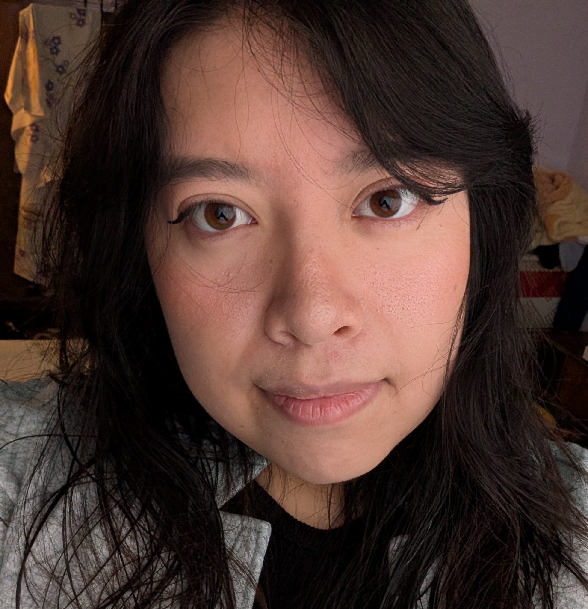
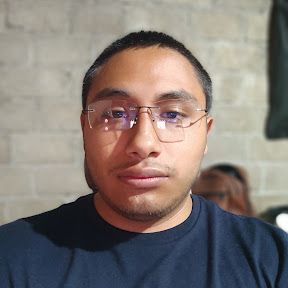
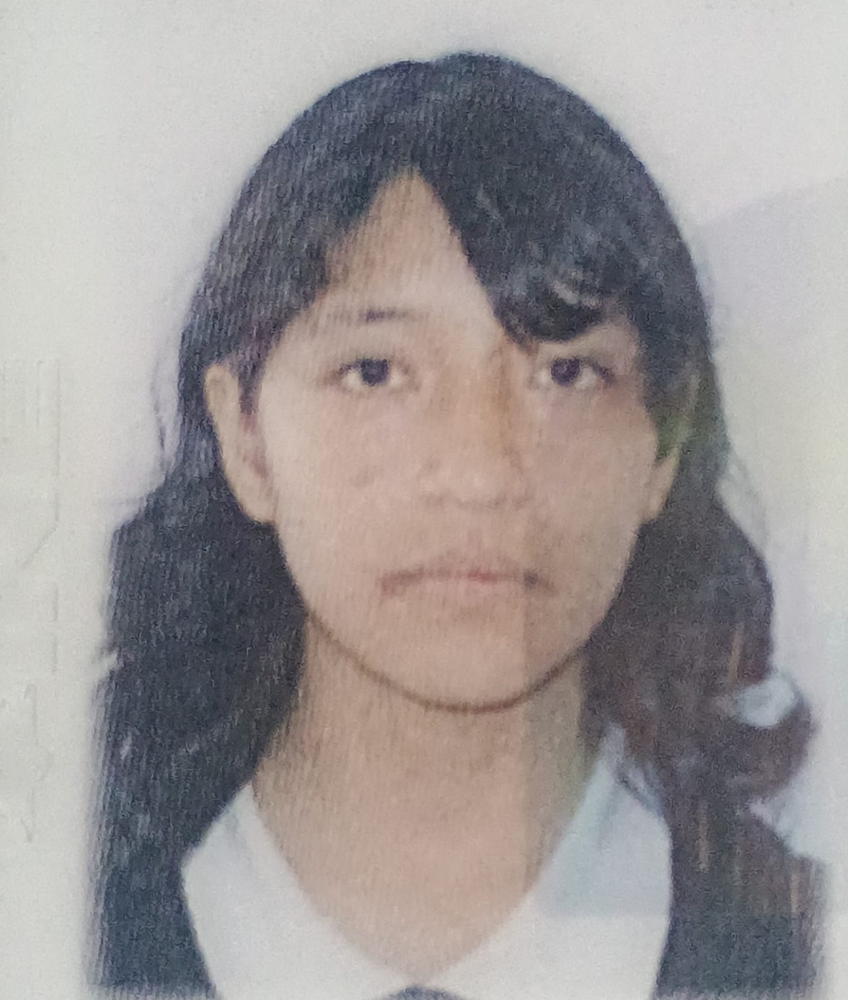

Jessica
Cofundador
Desarrollador enfocado en la integración entre la arquitectura lógica del software y el diseño visual de aplicaciones. Su labor se caracteriza por el rigor en la calidad, la resolución eficiente de problemas y una evolución técnica continua en lenguajes y herramientas de desarrollo, asegurando soluciones multiplataforma funcionales, atractivas y de alto impacto.

Asgard
Cofundador
Más de 4 años de experiencia en desarrollo de software, especializándose en la arquitectura técnica y la implementacion de metodologías agiles, implementando buenas prácticas de desarrollo para asegurar un producto final escalable, seguro y eficiente. Seleccionando y validando el ecosistema de herramientas y lenguajes a utilizar.

Uriel Tonatiuh
Cofundador
Apasionado por el desarrollo Front-End y la creación de interfaces de usuario intuitivas. Cuenta con 3 años de experiencia en gerencia y liderazgo de proyectos tecnológicos, destacándose en la gestión estratégica de equipos, optimización de procesos y diseño centrado en el usuario para entregar aplicaciones web modernas, ágiles y funcionales.

Regina Elizabeth
Cofundador
Profesional capacitado para diseñar, desarrollar e implementar aplicaciones de software compatibles con diferentes plataformas y dispositivos, utilizando herramientas tecnológicas y lenguajes de programación eficientes e innovadoras que respondan a las necesidades de los usuarios.